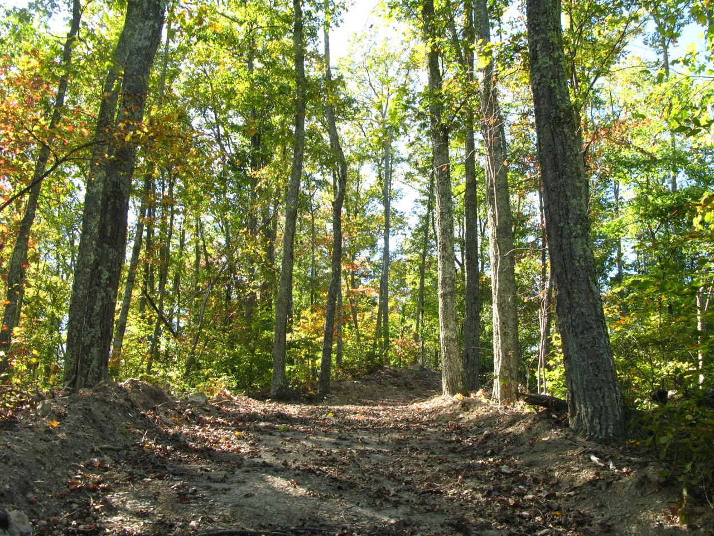

About the farm
A generation-crossing farm for family, community, and wildlife.
Hutton-Loyd Tree Farm is a family-owned tract of woodlands and farmland nestled in a picturesque Appalachian valley.
Caring for our piece of Kentucky's remarkable forest ecology by encouraging the growth of high-quality native hardwoods is our number one priority. For over four decades, our valley has also sustained a small and well-loved choose-and-cut Christmas Tree business.
Most of our property is covered in Kentucky hardwoods, with miles of farm roads and trails, a private lake, wetlands, fields, and habitat for wildlife.
Christmas at the farm
Find and cut your own tree

Before you come
Seasonal details
Loading this season’s open dates, hours, and prices…
Tips to Spruce Up Your Season
- Dress for weather, brambles, and mud :)
- A sedan is fine in most weather, 4-wheel drive is helpful after heavy rain or snow.
- Bring your furry friends. Space is plentiful, and friendly dogs may run free.
- Borrow from the hand-saws we provide or bring your own.
- Be cautious of stumps, holes, equipment, and other hazards.
- Carry your self-cut tree to staff to have it shaken, baled, and secured to your vehicle.
- At home, put your tree up away from heat and direct sunlight.
- Water your tree promptly, generously, and repeatedly to keep needles fresh.
- Enjoy the beauty and fragrance of your real Christmas tree!
Fields and farm operations share the valley with woodlands, wetlands, and wildlife habitat.
More at Hutton-Loyd
A farm beyond Christmas
Landscape trees and shrubs
Horizon Landscaping grows and sells a wide selection of species. Contact Jimmy at (606) 748-2834
Weddings & events
The valley, lake, old barn, and surrounding hills have hosted weddings, races, and other private events. Contact Herb at (606) 748-2837
Fishing
A fishing club provides access to the farm's scenic, 40-acre private lake stocked with bass, catfish, and crappie.
• 2026 Fishing Club Newsletter
• 2026 Member Application
Contact Haley at (606) 748-2320.
Land stewardship
Working land and woodland habitat
The farm is not only a place of production. Its woods, fields, streams, wetlands, and lake form a connected habitat for wildlife and plants. Long-term care of the property includes growing trees as a renewable crop while maintaining habitat and the character of the valley. Over 550 acres of forested land are currently under protection for carbon-sequestration.

Call, Email, or Visit
General directions
From the intersection of KY-32 with KY-1013, travel northeast on KY-1013. After 2 miles, turn left onto Big Run Road (easy to miss). After 1 mile, just after the crest of a hill, turn left onto a gravel road the Hutton-Loyd Tree Farm sign. Drive down the hill, across the dam, and into the valley.